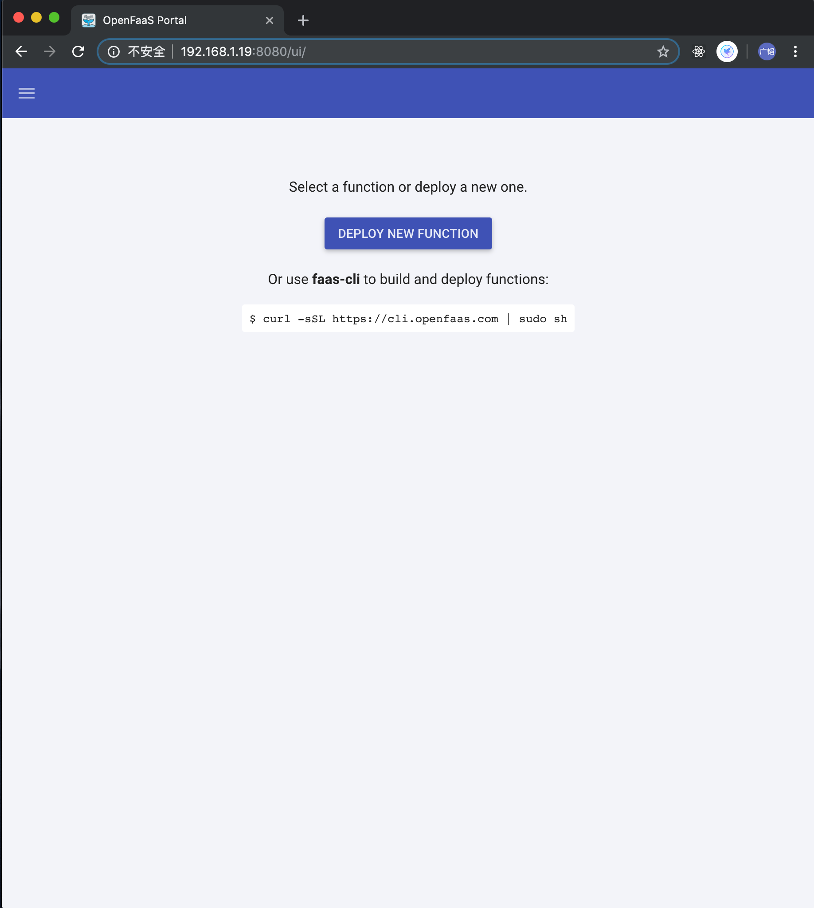
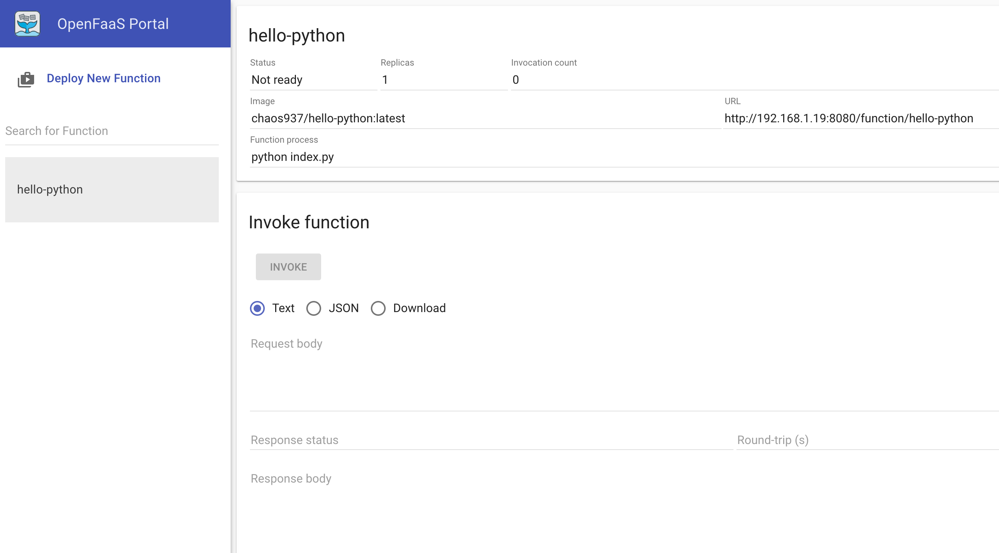
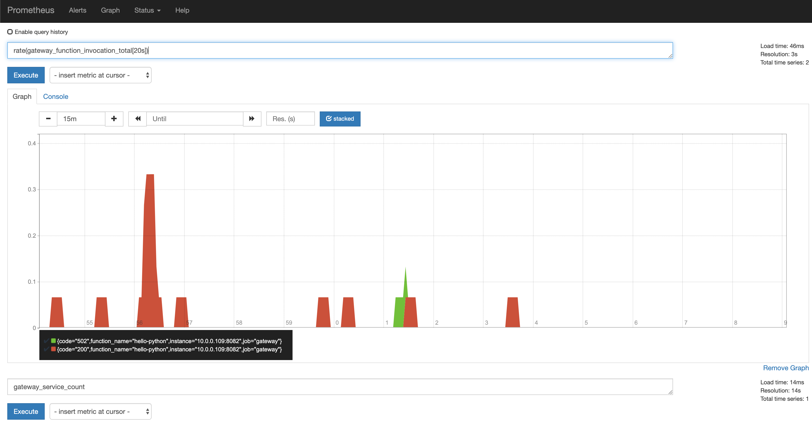

My first try in OpenFass
This post records my first attempt in OpenFass, which contains several problems and corresponding solutions I met.
Build Virtual Machine
Due to lack of Raspberry Pis, I turn to Virtual Machine to simulate the environment and begin the tutorial. You can read the post Steps to build VMs for specific steps.
Besides the steps in that post，I choose birdge as the network model and install oh-my-zsh for a more powerful shell.
Zsh install
- Install zsh packet
1 | yum -y install zsh |
- Switch zsh as default shell
1 | chsh -s /bin/zsh |
- Install “on my zsh”
1 | curl sh -c "$(curl -fsSL https://raw.githubusercontent.com/robbyrussell/oh-my-zsh/master/tools/install.sh)" |
###Function as a service
Functions as a Service is a framework for building Serverless functions on top of containers. In short “Serverless” is a misnomer - a new architectural pattern for event-driven systems. For this reason serverless functions are often used as connective glue between other services or in an event-driven architecture.
Create Swarm cluster
Install docker
Here I prepare 2 vms to form the cluster, and first of all, install docker.
1 | curl -fsSL https://get.docker.com/ | sh |
Then, start the docker service
1 | sudo systemctl start docker |
Now we can see that the docker is active:
1 | sudo systemctl status docker |
Initialize swarm manager node
To create a swarm cluster, there must be a manage node that can dispatch the task. We can select one of the vms and run command below.(Only need to run in the one vm that you choose as a master.)
1 | docker swarm init |
Add worker to swarm
From the initial output we can see the join token and the command to type into the other vm to join the swarm.
So, here we enter the other vm and run command.
1 | docker swarm join --token SWMTKN-1-1jqi3cvr4ms32r9mha91l5f1m2s1or0r8kzkrv412b8l6u3kub-di2gvhrv38j5jsbti0s68wd39 192.168.1.19:2377 |
Now we can check all my nodes in the manager.
1 | docker node ls |
Maybe it will throw an error when you add a worker.
Error response from daemon: rpc error: code = Unavailable desc = all SubConns are in TransientFailure, latest connection error: connection error: desc = “transport: Error while dialing dial tcp 10.211.55.3:2377: connect: no route to host”
Solution:
Just turn off the firewall by run command
sudo systemctl stop firewalld.
OpenFaaS
Now I move on to deploying a real application to enable Serverless functions to run on the cluster.
Build up OpenFaas
Get into the vm that serves as the manager and clone and deploy OpenFaas.
1 | git clone https://github.com/alexellis/faas/ |
We can get the username and password from the output. Note that carefully, and they will be required in the latter step. The process will take a few minutes, rum command below and we can check their status.
1 | watch 'docker service ls' |
They will be done when the REPLICAS comes to 1/1. Then we can continue the tutorial.
Because I use Centos to simulate the Raspberry Pi, we run ip addr to get the IP address, and we get 192.168.1.19.
1 | ip addr |
Web Servive in Virtual Machine
But at the first time, I can not get access to the server in my Host machine. I try to curl, but get a refuse message.
1 | curl 192.168.1.19:8080 |
In order to find the problem, I create a new vm to set up a similar environment. I set up a flask server and manage to find the reason.
Difference Between 127.0.0.1 and 0.0.0.0
But what takes me a lot time to figure out first is my wrong setting to the listenning IP host.
127.0.0.1
127.0.0.1 is the loopback Internet protocol (IP) address also referred to as the localhost. The address is used to establish an IP connection to the same machine or computer being used by the end-user.
0.0.0.0
0.0.0.0 is a valid address syntax. So it should parse as valid wherever an IP address in traditional dotted-decimal notation is expected. Once parsed and converted to workable numeric form, then its value determines what happens next.
So, because I set 127.0.0.1 as my host, the network packet can not be delivered to the public network, and thus we can not get the network packet from the other network interface controller.
Firework in Centos
After I change the host to 0.0.0.0, it still doesn’t work. Quickly I wonder whether the Centos keep away the request from my host machine. So I check the firewall in the vm.
1 | sudo systemctl status firewalld |
But what surprises me is that the firewall in Centos does be turn off. I doubt myself and continue to search solution in Google. Finally I get a amazing command.
1 | iptables -F |
The command seems like to shut down the firewall thoroughly, but I cannot get more detail in Google. However, the web server problem is solved by the command.
Now, we can see the Faas UI in host machine.

Deploy the first python serverless function
First, get the Faas-Cli.
1 | curl -sSL cli.openfaas.com | sudo sh |
Check whether Faas-Cli has been installed.
1 | faas-cli version |
Write first python function
Create a new folder
1 | mkdir -p ~/functions && \ |
Then use Faas-Cli to scaffold a new Python function
1 | faas-cli new --lang python hello-python |
It will create three fills in the folder
1 | + hello-python |
So edit the handler.py as the tutorial
1 | def handle(req): |
Then edit hello-python.yml:
1 | version: 1.0 |
###Build the python function
let’s build the function.
1 | faas-cli build -f ./hello-python.yml |
If you want to push the function’s image to a registry or the Docker Hub. Run command.
1 | faas-cli push -f ./hello-python.yml |
It seem to fail and I found that in order to push a Docker image to the registered public Docker hub repository, we need to first login with our registered credentials. Besides, the name of the images should be like user1/function1.
After login in Docker by docker login and rename the image, the push succeed.
1 | faas-cli push -f ./hello-python.yml |
Now we can check in Docker Hub and found that the image has been pushed to the repository.

Deploy the python function
After building, it’s time to deploy the function.
1 | faas-cli deploy -f ./hello-python.yml |
Similar failure hit me. The output tell me that I have no authority to access. Remember OpenFaaS uses basic-auth protection. Hence, we first need to authenticate with the API gateway http://192.168.1.19:8080 using the basic-auth credentials.
Username and password are shown in the output of command
./deploy_stack.sh
Login in faas-cli
1 | echo -n 9c2b624c6f76b0e55374d302c66bbf34f9c5d213b6ab2af1e554d1ba1d2b90a6 | faas-cli login --username=admin --password-stdin --gateway http://192.168.1.19:8080 |
Again deploy the function.
1 | faas-cli deploy -f hello-python.yml --gateway http://192.168.1.19:8080 |
Now we can see hello-python in Faas-Cli UI.

Use curl to call it in terminal and we can get the response:
1 | curl http://192.168.1.19:8080/function/hello-python -d "it's tao here" |
In addition, we can also use faas-cli to list and invoke functions.
List
1 | faas-cli list |
Here, we can easily know how many times the functions call and their replicas.
Invoke
1 | echo "hello" | faas-cli invoke hello-python |
We can also use fans-cli to invoke the function just like the command above.
Write Python fuction with 3rd party dependencies
Let’s look back at the file hello-python/requirements.txt. You can use pip by providing the file along with your function handler.
Here we add the request in requirements.txt:
1 | request |
And then update the Python code
1 | import requests |
Rebuild and re-deploy.
1 | faas-cli build -f ./hello-python.yml && \ |
Test the new function:
1 | curl http://192.168.1.19:8080/function/hello-python --data-binary '{ |
It works!
Data Analysis
Faas-Cli can do more about the functions.
Prometheus is an open-source systems monitoring and alerting toolkit originally built at SoundCloud, which means you can checkout the various metrics on how your functions are being used as well as how long they’re taking to run.
We can view the Prometheus UI at http://192.168.1.19:9090.

In Conclusion
This is my first time to take a journay in OpenFaas. During the attempt, I find it interesting to deploy a service in OpenFaas due to its lightweight and flexible service. I will continue to explore more in the field.


评论加载中